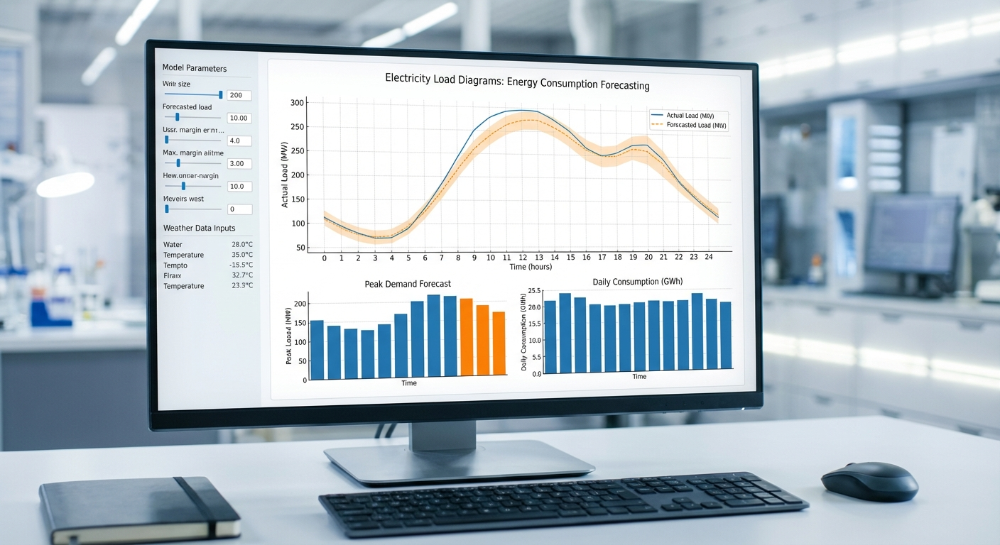

Topic 14
Electricity Load Diagrams
Hard
+1.5 Bonus Points

Topic 14 – Electricity Load Diagrams (Energy Consumption, Library Dataset)
Level: Hard Goal: Model and forecast electricity demand (multiple time series, rich seasonality).Dataset (Example Source)
- Source: Electricity load diagrams dataset (via libraries like GluonTS/HuggingFace, etc.)
- Example Link: https://huggingface.co/datasets/tulipa762/electricity_load_diagrams
Download (Simple Manual Approach)
- Open the link above.
- Download the CSV file containing the load data (if provided).
- Save to
data/electricity/.
Data Loading (If CSV is Available)
import pandas as pd
df = pd.read_csv("data/electricity/electricity.csv") # adjust filename
print(df.head())
Example: parse datetime column like "timestamp"
df["timestamp"] = pd.to_datetime(df["timestamp"])
df = df.set_index("timestamp").sort_index()Implementation Steps
1. Data Loading and Exploration
- Load electricity load data
- Understand data structure (multiple consumers, time series)
- Inspect data frequency (hourly, daily)
- Examine data quality and missing values
- Identify available variables
2. Exploratory Data Analysis (EDA)
- Plot load time series (overall and by consumer if multiple)
- Identify strong seasonality patterns:
- Daily patterns (hourly data)
- Weekly patterns (weekday vs weekend)
- Yearly patterns (seasonal variations)
- Analyze load distributions
- Calculate basic statistics
- Perform time series decomposition
3. Data Preprocessing
- Handle missing values
- Handle outliers (may be real events)
- Create time-based features (hour, day of week, month, season)
- Normalize or scale if needed
- Prepare data for modeling
4. Feature Engineering
- Time Features:
- Hour of day, day of week, month, season
- Holiday indicators
- Weekend indicators
- Lag Features:
- Previous hour, day, week loads
- Same hour previous day, week
- Rolling Statistics:
- Rolling mean, std (daily, weekly windows)
- External Features (if available):
- Temperature, weather data
- Economic indicators
5. Model Building
- Univariate Models (per consumer):
- ARIMA/SARIMA (strong seasonality - multiple seasonal patterns)
- Exponential smoothing (Holt-Winters with multiple seasonality)
- Multivariate Models:
- VAR models for multiple consumers
- Hierarchical models
- Machine Learning:
- Feature-based models (XGBoost, LightGBM)
- Handle multiple seasonality with features
- Advanced (if using libraries):
- GluonTS, darts, or similar time series libraries
- Deep learning models (LSTM, Transformer)
6. Model Evaluation
- Use time series cross-validation
- Split data temporally
- Calculate metrics (MAE, RMSE, MAPE)
- Evaluate at different time horizons (1-hour, 1-day, 1-week ahead)
- Compare multiple approaches
7. Forecasting
- Generate forecasts for different horizons
- Include prediction intervals
- Aggregate forecasts if multiple consumers
- Visualize forecasts with actual values
- Analyze forecast accuracy by time of day/day of week
8. Advanced Analysis (Optional)
- Analyze load patterns by consumer type
- Identify peak demand periods
- Analyze seasonal variations
- Compare different modeling approaches
- Analyze feature importance
Expected Deliverables
- EDA Report:
- Load time series plots
- Seasonality analysis (daily, weekly, yearly)
- Pattern identification
- Statistical summaries
- Model Results:
- Selected model(s) with parameters
- Performance metrics (by horizon)
- Forecast plots
- Comparison of approaches
- Code:
- Complete Python notebook
- Data processing functions
- Feature engineering utilities
- Modeling pipeline
Tips
- Electricity load has very strong and complex seasonality (multiple patterns)
- Daily patterns are crucial (peak hours, off-peak hours)
- Weekly patterns (weekday vs weekend) are important
- Yearly patterns (summer vs winter) affect demand
- Multiple seasonality requires SARIMA with multiple seasonal components or feature engineering
- Consider using specialized time series libraries (GluonTS, darts) for complex seasonality
- Feature engineering is essential (time features, lags, rolling stats)
- External features (temperature) can significantly improve forecasts
- Handle multiple consumers appropriately (panel data structure)
- Use appropriate evaluation metrics and cross-validation
- Document all preprocessing and feature engineering steps
- Compare simple models (ARIMA) with complex models (XGBoost, LSTM)
- Consider ensemble methods for better performance
- This is a challenging problem - expect to try multiple approaches
Getting Started
This topic includes:
- README.md - Detailed implementation guide (this page)
- starter.ipynb - Jupyter notebook with installation and data loading code
- Featured image - Visual representation of the topic
Navigate to the Topic/14.Electricity_Load/ directory to access all resources.